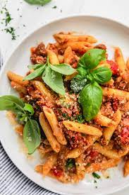

Bolognese

Description
Pasta Bolognese is a classic Italian dish made with ground beef, tomatoes and onions. This is a staple delicious dinner recipe that is such a crowd pleaser.
Ingredients
- 1 tablespoon olive oil
- 1 pound lean ground beef
- ½ teaspoon salt
- ½ teaspoon black pepper
- 1 onion diced
- 2 garlic cloves minced
- 1 teaspoon oregano
- 1 teaspoon basil
- ½ teaspoon crushed red pepper
- 2 15-ounce cans crushed tomatoes
- 2 tablespoons tomato paste
- 16 ounces Spaghetti or penne pasta for serving
- Fresh basil for serving
Step-by-step
- Bring a large pot of salted water to a boil. Add pasta and cook al dente according to package instructions; drain. Reserve ½ cup pasta water.
- Heat the olive oil in a large deep saute pan. Add the beef and season with salt and pepper. Brown the beef and break it into smaller pieces with the back of a wooden spoon until cooked through.
- Add onions and garlic; and season with oregano, basil and crushed red pepper. Saute for about 5 minutes until they soften. Add crushed tomatoes and tomato paste and pasta water. Mix to combine, bring mixture to a boil and then simmer on low covered for 30 minutes.